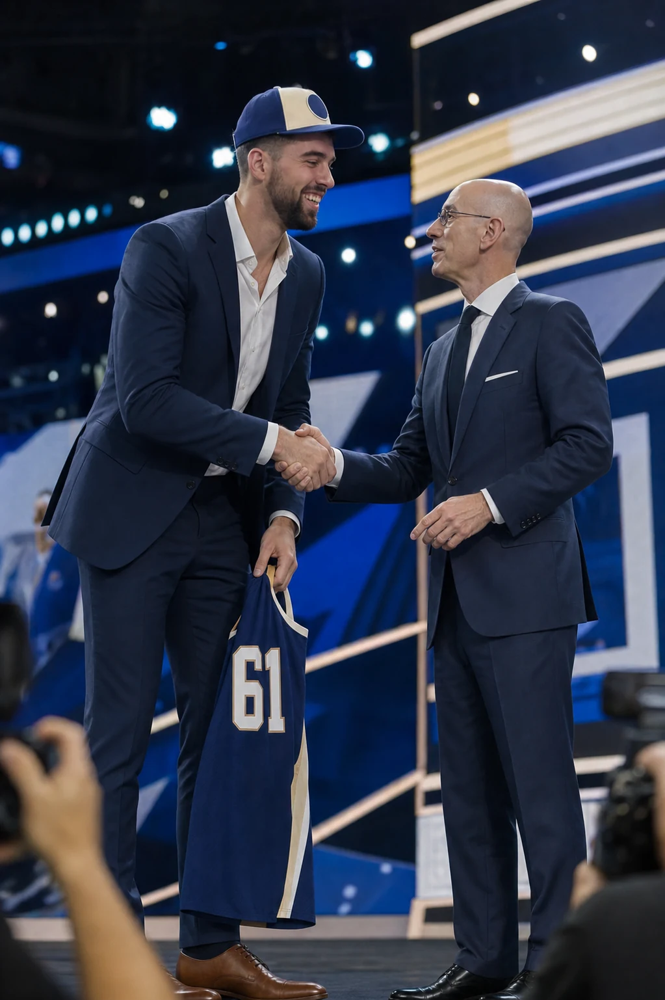
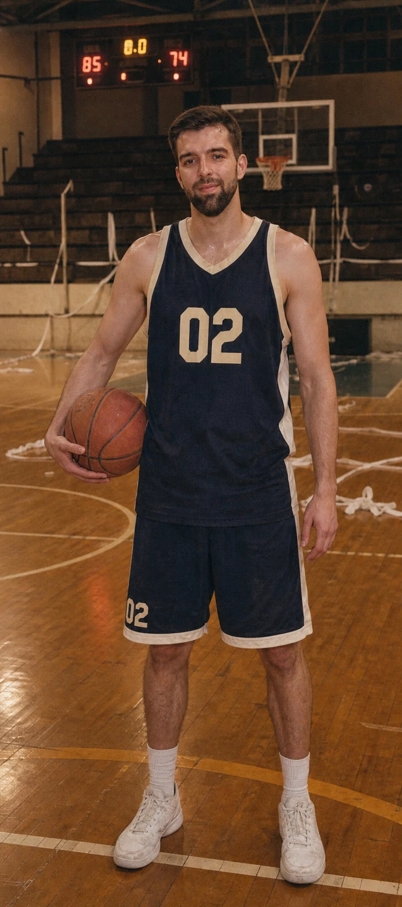
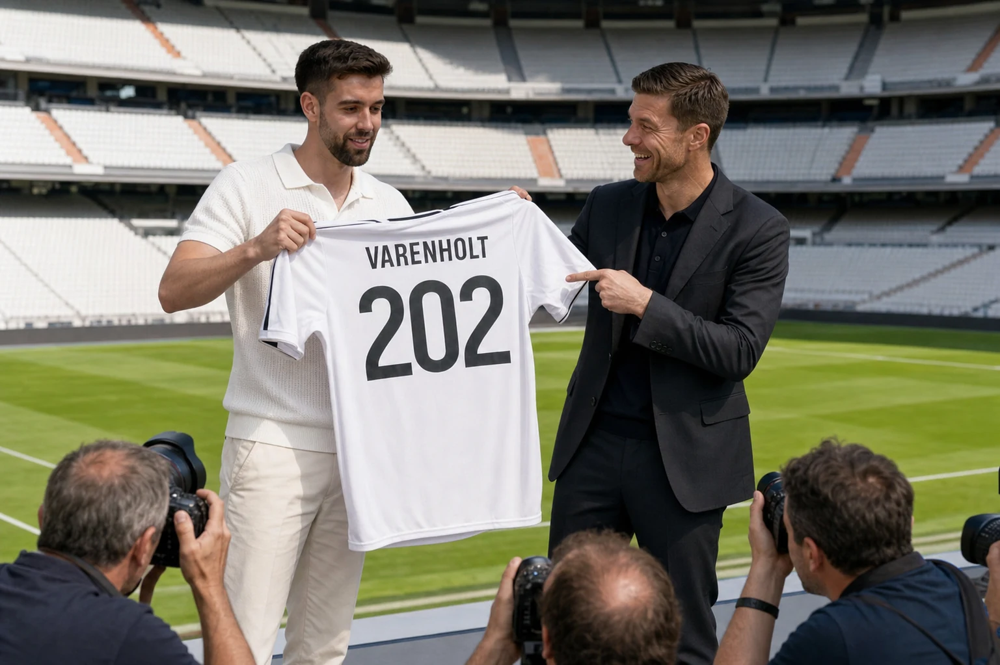

EXPEDIENTE 61/60
La elección que llegó después del final
Max sostiene que Adam Silver abrió una ronda extraordinaria. La organización sostiene que Max subió al escenario cuando estaban recogiendo.
Abrir expediente del draft
ARCHIVO DEPORTIVO · FINAL REGIONAL · RESULTADO NO CONSULTADOSCOUTING REPORT · TEMPORADA INDEFINIDA
Alero grande · Base moral · Pívot cuando nadie más quiere

Max sostiene que Adam Silver abrió una ronda extraordinaria. La organización sostiene que Max subió al escenario cuando estaban recogiendo.
Abrir expediente del draft
Xabi Alonso habría solicitado altura de emergencia. Max entendió contrato indefinido y eligió dorsal antes de que terminara la pregunta.
Ver presentación en MadridVe la jugada antes que los demás, especialmente cuando ya ha terminado y dispone de tiempo para explicarla.
Convierte una pachanga de domingo en una eliminatoria recordada por generaciones que no estaban presentes.
Correcta sobre la pista. Excepcional cuando toca defender que aquello fue una asistencia y no un tiro corto.
Organiza la cena antes del calentamiento y consigue una mesa para más personas de las que figuraban en el grupo.
NOTA DEL OJEADOR
Trayectoria prolongada, disciplina competitiva y una relación creativa con la estadística. Recomendado para equipos que valoren rebote, responsabilidad y sobremesas con revisión de vídeo.
Draft 61 · Operación 202 · Comparativa backstage · Informe de resistencia en festivales · Volver al buscador